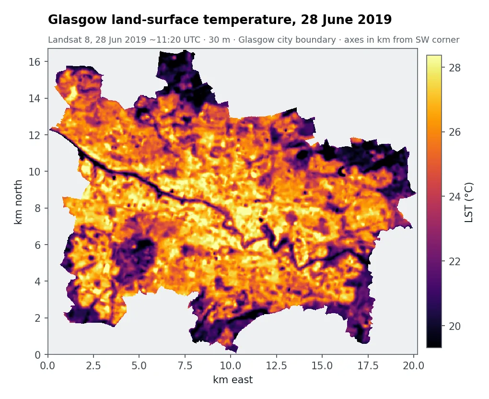
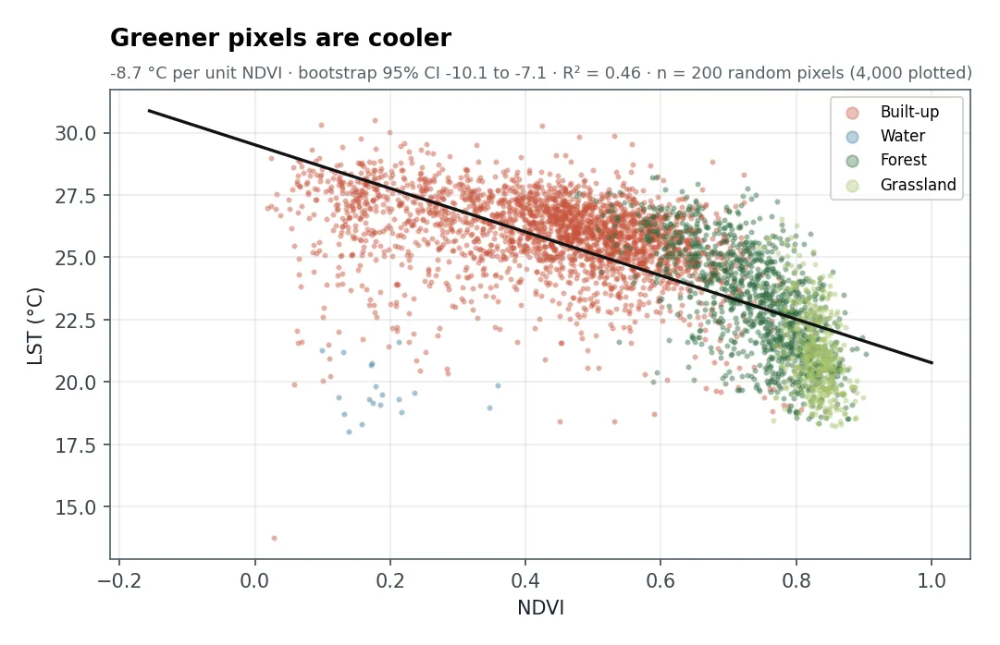

问题
规划行道树、绿色屋顶和公园的市政部门需要知道在哪里增加绿化降温效果最好。高温影响健康和舒适度，而预算有限。
我做了什么
- 测量地表温度（LST地表温度：用热红外测得的地面和屋顶有多热，不是人体感受到的气温。）：用 Landsat 8 热红外波段，并校正不同地表的发射率差异。
- 绘制植被和土地覆盖：用红光和近红外波段计算 NDVI归一化植被指数：(近红外 − 红光) ÷ (近红外 + 红光)。值越高，植被越多、越健康。，并分类为建成区、水体、森林和草地。
- 测量绿化的降温效果：从 200 个随机像元对温度和 NDVI 做回归，并给出自助法自助法：对数据反复重抽样，看结果会因偶然因素变化多少，从而得到置信区间。置信区间。
- 对优先区排序：既炎热（远高于全市平均）又缺少植被的建成区像元。
- 估算绿化的收益：NDVI 小幅、中幅和大幅增加时分别能降温多少。
地图显示了什么


2019 年 6 月 28 日，建成区地表平均 25.9 °C，草地为 21.3 °C。植被越多的像元明显越凉快：NDVI 每增加 0.1，约降温 0.9 °C（95% 区间 0.7 到 1.0 °C）。
在 25.5 km² 的优先区内把 NDVI 提高 0.10，例如种行道树、建绿色屋顶，地表大约能降温 0.9 °C（0.7 到 1.0 °C）。可以在首页的互动工具里试试其他数值。
结果有多可靠？
- 是地表温度，不是气温。卫星测的是屋顶和道路有多热，不是人感受到的气温。
- 只有一个晴朗的早晨。单景影像只反映一个时刻，不代表整个夏天。
- 是相关，不是因果。降温估计假设全市范围的关系在局部同样成立，适合用来筛选，不能保证某一条街的效果。
- 小水体在 30 m 分辨率下会被低估。
可以交付什么
- 全市温度图和植被图
- 绿化优先区排序图
- 附不确定性范围的降温情景
- 可与相关方一起探索方案的互动仪表板